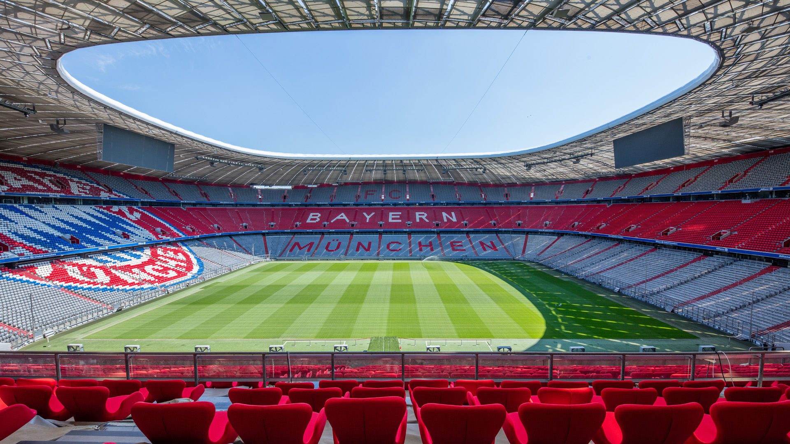
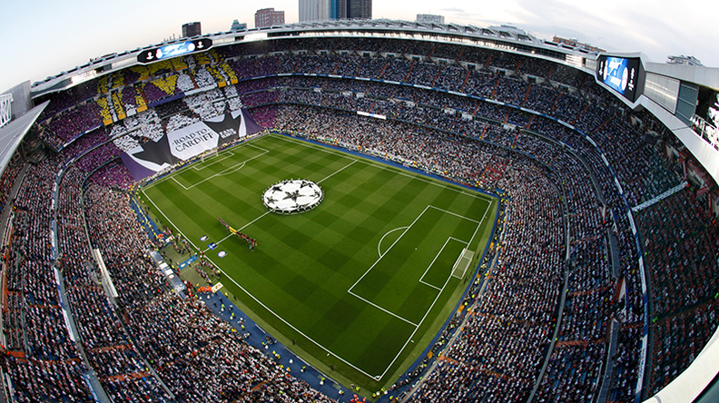

Every stadium is different. The ranking system incorporates four key metrics. The atmosphere, viewing angles, architecture, and surrounding area. These four metrics incorporate a hollisitc perspective at futbol stadiums. They are beauty, art, economic staples, and create a local clture.
The atmosphere includes the fan culture, chants, and proximity to the game pitch within the stadium. Viewing includes the ability to see the game and any obstructions or odd angles. Architecture analyzes the building's design and creative features that provide a taste of art for all futbol fans.
Finally, the surrounding area incorporates the town or city and whether this improves or decreases the value of the stadium. It is difficult to properly asses a stadium on these four metrics, but is conducted through experiences, references, research, and futbol knowlegde.
#12 - Stade Louis II

Being in the top 12 for stadiums in Europe is a feat nonetheless. However, there are a few reasons for placing Stade Louis at twelth compared to the other stadiums listed. The architecture is marvelous, images from the mountaintops, the unqiue rooftop design screams Monaco, and the structure
within the stadium boosts the overall designs. The atmoshpere is vibrant, yet the biggest downside is the track that surrounds the field. This track is the biggest downside to any footballer or fan. It creates seperation between the fans and players which negatively impacts the atmosphere. Due to
strong architecture the viewing is one the best - no columns, nets, or other obstructions for the fans. Perfect ciruclation allows for fans to catch the action from any angle. Fianlly, the surrounding area for Monaco is stunning. This stadium has very little downside other than the track and the expense
associated within Monaco. However, everything about this stadium puts it on the list of the 12 best stadiums in Europe to go visit!
#11 - Sukru Saracoglu Stadium
Sukru Saracoglu Stadium ...
#10 - Arena Nationala
...
#9 - Anfield Stadium
...
#8 - Celtic Park
...
#7 - San Siro
...
#6 - Allianz Arena

...
#5 - Santiago Bernabeu

...
#4 - Signal Iduna Park
...
#3 - Old Trafford
...
#2 - Camp Nou
...
#1 - Wembley Stadium
...